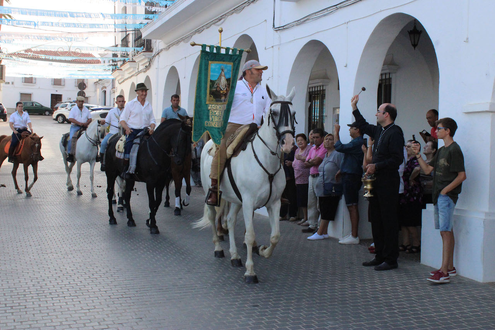
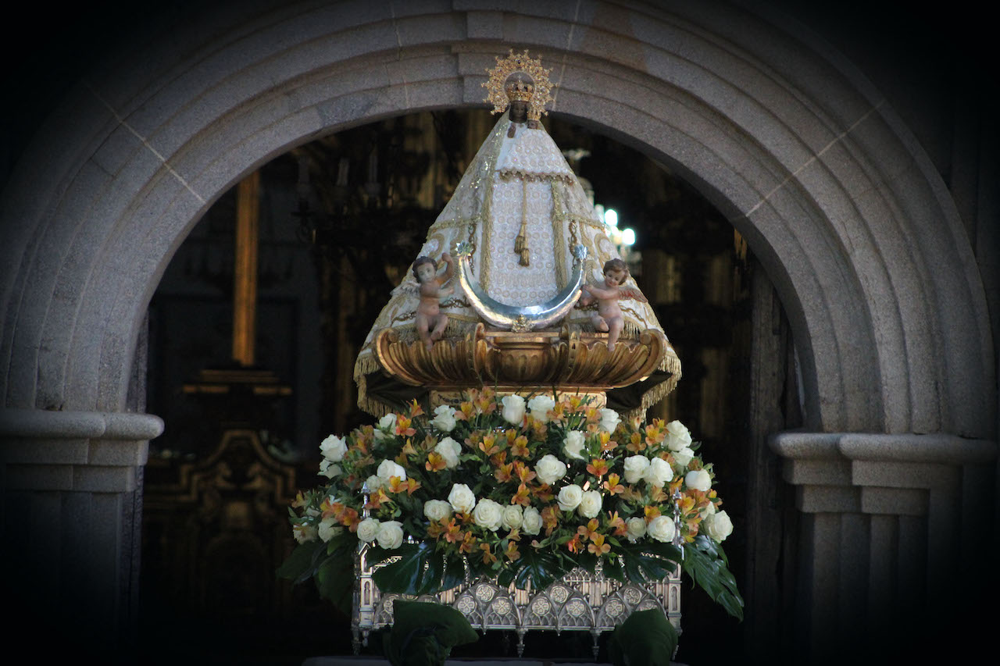
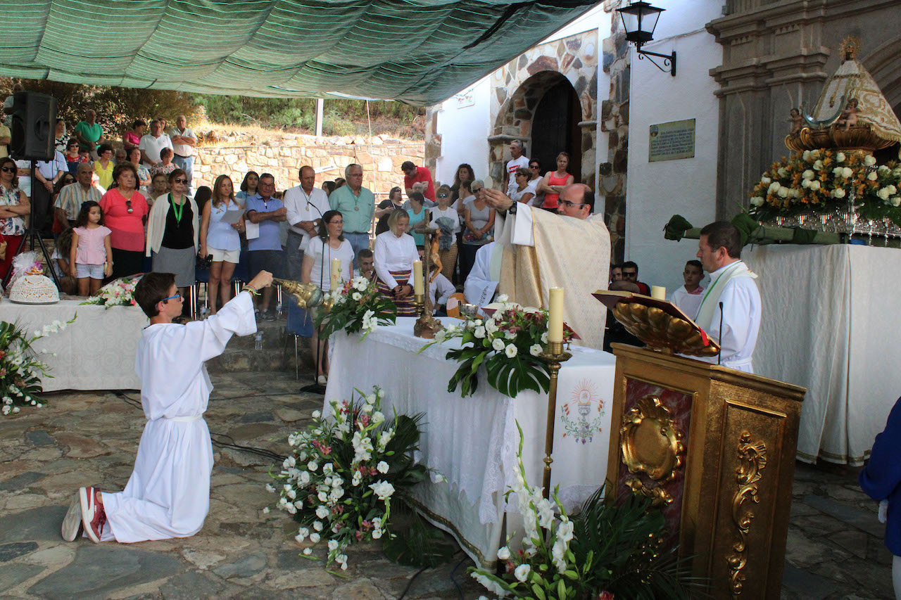
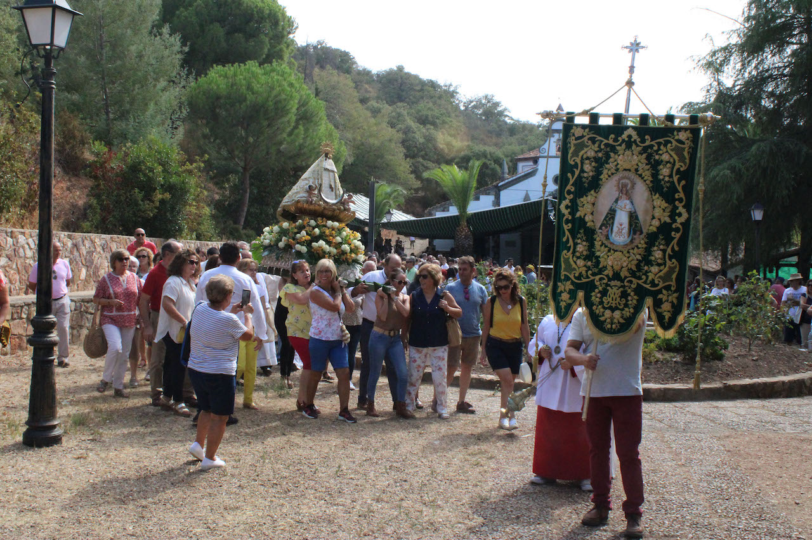
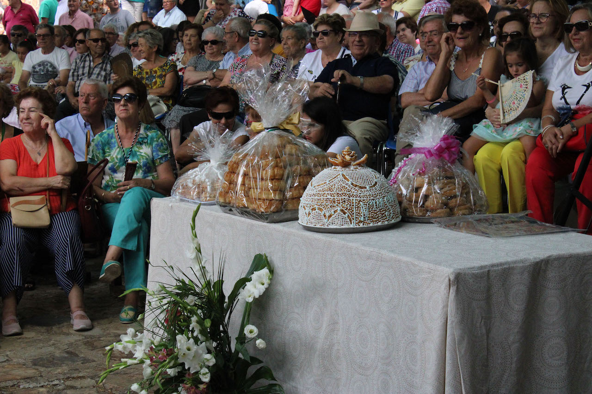

Jubileo
Una celebración religiosa y popular cargada de historia.
El Jubileo de Herrera del Duque es una de las celebraciones más emblemáticas de Extremadura y una experiencia imprescindible para quienes buscan descubrir la esencia de las tradiciones locales. Esta fiesta patronal, que se celebra cada año el 8 de septiembre, combina devoción, historia y un ambiente festivo único que atrae tanto a visitantes como a habitantes de la comarca.
Durante los días previos, el municipio se llena de actividad con actos religiosos como misas, rosarios y ofrendas florales en honor a la Virgen, cuya imagen es trasladada al pueblo. Este periodo crea una atmósfera especial que anticipa el gran día y permite al visitante sumergirse en la vida y costumbres locales.
El momento culminante llega el 8 de septiembre. La jornada comienza con la despedida de la Virgen en el conocido “Pilarito”, desde donde inicia su regreso a la ermita en un recorrido cargado de emoción y simbolismo. Una vez allí, se celebra la Santa misa y, posteriormente, la tradicional procesión, en la que fieles y visitantes acompañan la imagen en un entorno natural que refuerza el carácter de romería.
Pero el Jubileo es mucho más que un acto religioso. A lo largo del día, el ambiente se llena de vida con la subasta de mangas y dulces típicos, una de las tradiciones más singulares de la fiesta. Además, los visitantes pueden disfrutar de puestos con recuerdos de la Virgen, gastronomía local, música y baile, creando un entorno festivo ideal para compartir y conocer la cultura del lugar.
Visitar Herrera del Duque durante el Jubileo es adentrarse en una celebración auténtica, donde la tradición y la convivencia se unen para ofrecer una experiencia inolvidable. Una oportunidad perfecta para descubrir el corazón de Extremadura y formar parte de una fiesta que se vive con intensidad y emoción.
Galería de fotos




